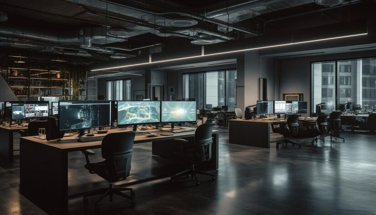
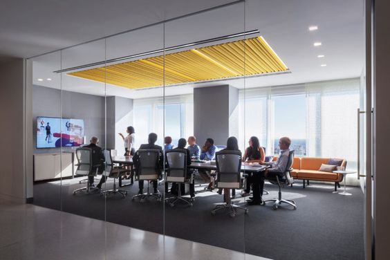
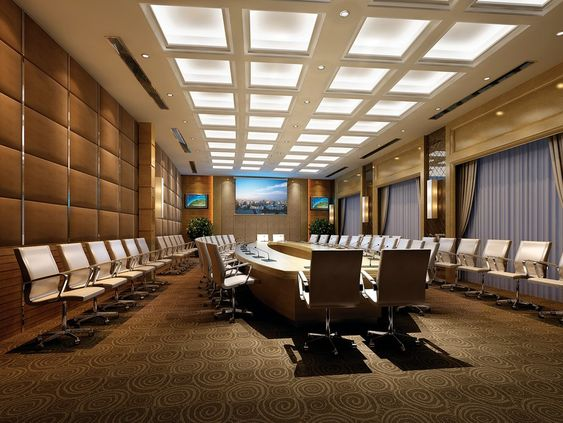

History
TechCon was founded in 2000 by a group of tech enthusiasts who wanted
to create a platform for sharing knowledge and fostering innovation in
the tech industry. Over the years, the conference has grown in size
and reputation, attracting top talent and industry leaders from around
the world.


Mission
The mission of TechCon is to inspire, educate, and connect the tech
community through engaging talks, workshops, and networking
opportunities. We believe in the power of technology to drive positive
change and empower individuals to shape the future.

Past Speakers
John Doe is the CEO of TechCorp, a leading tech company known for
its innovative products and services. He has been a keynote speaker
at TechCon for the past five years, sharing his insights on the
latest tech trends and industry best practices.
Jane Smith is the CTO of TechSolutions, a startup specializing in
AI-driven solutions for businesses. She has spoken at TechCon on
multiple occasions, discussing the future of AI and its impact on
various industries.